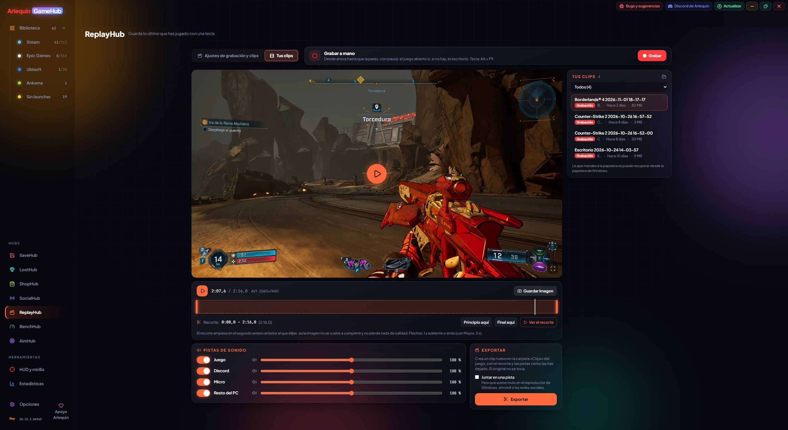

ReplayHub: desa el que acabes de jugar
Prem una tecla i l'última part de la teva partida es desa com a vídeo, com amb ShadowPlay.
ReplayHub continua gravant l'última part del teu joc en segon pla i, quan prems Alt + F10 (ho pots canviar), la desa com a vídeo. Captura la pantalla des de fora del joc sense posar-hi res (compatible amb l'anti-trampes) i codifica amb la teva targeta gràfica (AMD, NVIDIA o Intel), de manera que gairebé no fa servir el processador.
Tries quant temps conserva, la resolució, 30 o 60 FPS, la qualitat i el format: AV1, HEVC o H.264 (per defecte AV1 o, si la teva targeta no el té, H.264), en MKV o MP4. El so arriba per parts: el joc, Discord, el teu micro i la resta del PC. Si alguna cosa surt malament en desar, el que ja s'havia escrit encara es pot reproduir. Free: tot el so en una pista i fins a 2 minuts per clip; amb ArlequinPro, una pista per font i fins a 2 hores per clip.
Emissions en directe: emet a Twitch, YouTube, Kick, TikTok o un altre servidor (amb ArlequinPro, a diversos alhora) amb escenes, la teva càmera i el xat de Twitch en pantalla. Inicia sessió amb Twitch o Kick i la clau s'omple per tu. També alertes de seguidors i subscripcions, repetició instantània, gravació alhora, estat de l'emissió per plataforma, una prova de pujada que recomana els Mbps, importació d'escenes d'OBS i un resum quan acabes.
Clips: desa'ls amb un botó del ratolí o del comandament, marca moments (Alt + F5), exporta'ls en vertical, ajusta el volum de cada font, silencia el micro amb una tecla (Alt + F6) i puja'ls al teu propi núvol, amb un enllaç a Google Drive.
Com es fa servir
- ReplayHub és a la barra lateral, sota Hubs: obre'l i activa'l.
- Alt + F10 desa el clip, a tots els jocs (amb ArlequinPro, només als que triïs i amb una durada per a cadascun).
- Els clips van a Vídeos\ReplayHub, en una carpeta per joc.
- «Gravació manual» al costat de les pestanyes, i les tecles també funcionen als jocs que s'apropien del teclat (com Fallout New Vegas).
- T'avisa si dues tecles són la mateixa, i l'editor obre a l'instant les gravacions llargues.


Vols provar-lo?
⬇ Baixada directa 🛍️ Baixa'l de Microsoft StoreWindows 10 i 11 (64 bits) · Gratuït · S'actualitza sol